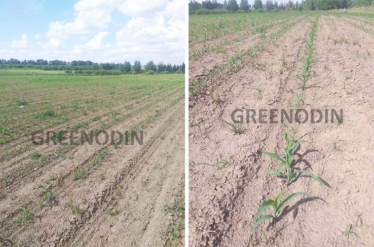

GREENODIN fertilizers for maize
GREENODIN maize fertilizers are organo-mineral granular fertilizers for organic grain maize. The line is chosen by soil pH: GREENODIN RED on acidic soils (below 5.5) and GREENODIN BROWN on alkaline soils (above 7.5). The base rate is 250 kg/ha, and 150 kg/ha on crop residues.
Recommended lines
The line is chosen according to soil acidity and composition; fertilizers can be combined.
- Farming system
- Grain maize; organic production
- Optimal soil pH
- 5,5–7,0
- Preceding crops
- Winter and spring small grains, pulses, sugar beet, buckwheat, root and tuber crops, lupin, perennial grasses
| pH below 5.5 | GREENODIN RED |
|---|---|
| pH above 7.5 | GREENODIN BROWN |
Soil acidity is best determined by a lab test. Fertilizers from different lines can be combined.
Thanks to the cumulative effect, the rate is reduced by 20% every year.
| Product | Rate | Spray volume |
|---|---|---|
| Soil treatment | ||
| GREENODIN | 80–250 kg/ha | |
| Groundfix | 5 L/ha | |
| Seed treatment before sowing | ||
| HelpRost | 2.0 L/t | |
| Mikohelp | 2.0 L/t | |
| Mikofrend | 5.0 L/t | |
| Liposam | 0.4 L/t | |
| 4–7 leaves | ||
| HelpRost/Boron | 1.0 L/ha | |
| Organic-Balance | 0.5 L/ha | |
| Lepidocid | 5.5 L/ha | |
| Bitoxibacillin-BTU | 8.5 L/ha | |
| Fitohelp | 0.7 L/ha | |
| Azotofit-r | 0.3 L/ha | |
| Liposam | 0.3 L/ha | |
| 7–10 leaves | ||
| HelpRost/Boron | 1.0 L/ha | |
| Organic-Balance | 0.5 L/ha | |
| Lepidocid | 5.5 L/ha | |
| Actoverm Formula | 5.0 L/ha | |
| Mikohelp | 3.0 L/ha | |
| Azotofit-r | 0.3 L/ha | |
| Liposam | 0.5 L/ha | |
| Tasselling | ||
| Humifrend | 0.5 L/ha | |
| Lepidocid | 5.5 L/ha | |
| Actoverm Formula | 5.0 L/ha | |
| Mikohelp | 0.7 L/ha | |
| Liposam | 0.5 L/ha | |
| Crop residues | ||
| GREENODIN | 150 kg/ha | |
| Ecostern | 1.5 L/ha | |
Before using any supporting products, check their current labels and compatibility.
For maize to grow and develop well, its cultivation has to be adapted to the climate, making full use of the soil's potential and boosting it with fertilizers and irrigation.
Growing organic grain maize
Searches like “fertilizer for maize”, “what fertilizer to sow maize with” or “complex fertilizer for grain maize” cannot give a simple answer to the key question: how do you grow organic grain maize properly?
The answer is comprehensive, like the excellent innovative solutions of the GREENODIN brand, and consists of several required sections, including:
- soil requirements;
- soil preparation for corn;
- fertilizing corn;
- sowing corn;
- care of corn crops;
- feeding corn;
- irrigating corn;
- pests and diseases of corn;
- harvesting corn;
- post-harvest soil treatment;
- storing the corn harvest.
Let's begin.
Sowing maize in the open field. Soil requirements
Good soils for maize are deep chernozems, dark grey loams and floodplain soils with a permeable subsoil, where maize easily develops a mass of fibrous roots. Loose soil with good air and water permeability works best.

An excellent result when growing corn after applying Greenodin Gray corn fertilizer. Photo from June 2023: Dekalb variety, 5–6 leaf stage
For development corn needs oxygen, carbon, hydrogen, nitrogen, phosphorus, potassium, calcium, sulfur, iron, magnesium and, in small amounts, manganese, boron, chlorine, iodine, zinc, copper and other microelements. Corn needs the most nutrients during ear formation and grain filling.
Corn takes up certain macro- and microelements with varying intensity across growth phases, up to the wax ripeness of the grain. In the first half of the growing season it needs more phosphorus, potassium and nitrogen, and after flowering enhanced phosphorus and potassium nutrition. Proper soil fertilization and feeding of the crop is the most important condition for high yields.
Soil pH has a strong effect on plant development; the optimum is pH 5.5–7.0, as it directly determines how available these nutrients are to maize and how drought-tolerant the crop is. For example, below pH 5.5 the availability of magnesium, calcium, potassium and molybdenum drops.
- If your soil is alkaline, >7.5 pH, we recommend GREENODIN BROWN at 250 kg/ha or 25 g per sq. m.
And while soil pH can be corrected with GREENODIN organic fertilizers, you should think hard before sowing organic corn on soils with rhizomatous and root-sprouting weeds, including:
- sow thistle,
- pale persicaria,
- couch grass and others.
Keep in mind that organic growing rules out herbicides, and manual labor is not always justified.
Soil Preparation for Corn
Primary tillage. The maize root system develops gradually in all directions, with 70% of it in the top 30 cm of soil, so the crop is very sensitive to ploughing depth.
The main goal of primary tillage is to create conditions for maximum accumulation and retention of moisture in the soil without weakening weed control.
Primary tillage for corn after solid-sown crops usually consists of two operations: stubble breaking and autumn ploughing.
In regions with a long frost-free period the best weed suppression comes from double stubble breaking, the second pass to a depth of 10–12 cm, 3–4 weeks after the first. This destroys more than 70% of weeds and reduces the number of their seeds in the soil by 50%.
On fields infested with rhizomatous weeds, including couch grass and horsetail, cross-discing is done to a depth of 10–14 cm. Where creeping perennial weeds such as sow thistle and field bindweed are present, discing is repeated after 2–3 weeks. In a soil-conserving non-inversion system, the soil is loosened with a harrow right after harvest, followed by two passes with a sweep cultivator: first to 8–10 cm, then to 12–14 cm.
Pre-sowing tillage. Pre-sowing tillage for maize follows discing without delay so that soil moisture is not lost. Maize needs two cultivations at different depths with harrowing, plus rolling in dry, windy weather. The depth of cultivation, especially the first, depends on soil type and weather. In most areas with insufficient moisture, the first cultivation should be deeper and the second shallower, to seeding depth.
Fertilizing maize
Maize takes up nutrients from the soil throughout the growing season. Nitrogen and potassium uptake ends earlier, while phosphorus keeps entering the plants almost until maturity.
Fertilizers are applied in autumn or spring before ploughing or cultivation (base fertilizer), at sowing, and as top-dressing during the growing season.
Corn growing technology with GREENODIN provides for:
- solving several tasks at once and, as a result, simpler growing;
- long-lasting action: the fertilizer stays in the soil and builds an ecosystem, unlike liquid organic fertilizers;
- a cumulative effect: every year the GREENODIN application rate can be reduced by 20% of the initial one. After 5 years the rate will be only 20% of the initial dose (80 kg);
- restoration of natural soil fertility and its increase, with easily available mineral nutrition and natural humus formation;
- stronger protection against known corn diseases;
- stronger plants and a powerful root system;
- up to 30% less irrigation water;
- live bacteria in the fertilizers:
- suppress the development of pathogenic flora;
- reproduce the macroelements nitrogen, phosphorus, potassium, calcium, magnesium and the microelements boron, zinc, manganese, molybdenum and others, providing sufficient natural nutrition in a form that corn takes up easily:
Nitrogen (N) stimulates the growth and development of corn. Corn meets 50–85% of its nitrogen needs through fixation from the atmosphere, and for this the nitrogen-fixing bacteria in GREENODIN are enough;
Phosphorus (P) stimulates the development of the corn root system and most of its generative organs, which lays the foundation of the harvest. The phosphorus-mobilizing bacteria in GREENODIN do this very well;
Potassium (K) affects moisture retention in the soil and creates a mutually reinforcing effect with silicon in amorphous form. Corn absorbs 25% of its potassium before flowering and the remaining 75% in the formation phase. Potassium combined with silicon actively influences yield, increases protein content, aids nitrogen fixation and strengthens resistance to disease and stress. All of this is boosted by the beneficial effect of potassium-mobilizing bacteria from GREENODIN;
Calcium (Ca) improves soil structure, the uptake of other elements and the development of the corn root system, and is part of GREENODIN. Calcium takes part in hormonal reactions and, together with silicon, in building the cell walls of corn plants. It is needed throughout the growing season, especially during flowering, setting and formation;
Magnesium (Mg) raises yield, chlorophyll content and the resistance of corn to disease, and also supports enzymatic processes and the accumulation of fats and essential oils;
Boron (B) stimulates the growing points of young corn plants, including through the supply of nitrogen. It also stimulates flowering, setting and ripening;
Zinc (Zn) activates a number of enzymes and takes part in plant nitrogen metabolism and protein formation;
Manganese (Mn) activates enzymes, chlorophyll synthesis and photosynthesis in general;
Molybdenum (Mo) promotes root growth by activating nodule bacteria and speeds up vegetation. It localizes in the young organs of plants and, at the end of the growing season, raises yield and protein content.
PRODUCTION SCHEDULE
The use of GREENODIN fertilizers depends on the soil type, from slightly acidic to slightly alkaline, its properties, including organic matter content, and the kind of corn itself. The average rate is 150 kg/ha, with a maximum of 250 kg/ha and a minimum of 80 kg/ha. The product has a cumulative effect, so for repeated use it is recommended to reduce the rate by 20%, down to the minimum of 80 kg/ha.
The supporting products made by BTU-Center are recommended for organic farming and work better when used together with GREENODIN, thanks to its active silicon, which stores beneficial substances, and its beneficial soil bacteria.
However, all the conditions for growing organic maize successfully deserve a closer look.
Sowing maize
Place in the rotation. Maize yields well after winter and spring small grains, pulses, sugar beet, buckwheat, root and tuber crops, lupin and perennial grasses.
Plant density. With mechanised maize production, it is important to reach the optimal plant density by setting the drills to the target seeding rate: 15–22 seeds per three running metres, or 20–30 kg by weight depending on the thousand-seed weight. To allow for field germination, the seeding rate is usually increased by 10%. This fully compensates for lower field germination, partial damage to seeds and seedlings by soil pests and diseases, and losses from harrowing emerged crops, giving an optimal or near-optimal plant stand.
Sowing dates and seeding depth. Maize should be sown when the soil at seeding depth has warmed to at least +10 °C, and sowing should be finished quickly. If a rapid rise in temperature is forecast, sowing can start slightly earlier. Keep in mind, though, that both very early and late sowing reduce yield.
On fields free of weeds and with few pests, sow maize at the start of the optimal window; on weedy fields, sow at the end of it after extra weed control.
Seeding depth should be decided for each field separately. Deep seeding on heavy, insufficiently warmed soils delays emergence. On the other hand, seeding too shallow is also a mistake, as the seeds end up in the dry topsoil and germinate poorly. In each case, seeding depth depends on the sowing date, soil moisture and texture, and spring weather, especially temperature.
Strong, even emergence comes from placing seed at a depth where it has enough moisture, air and warmth. In the dry and semi-arid south on chernozems, the best conditions are usually at 8–10 cm, or 10–12 cm if the soil has dried out a lot by sowing time, depending on soil quality, moisture and sowing date. A seeding depth of 6–8 cm is considered optimal, and 5–6 cm in very wet conditions. In the western regions, seed should be placed at 6–8 cm.
On heavy waterlogged soils it is reduced by 1–2 cm, and on lighter sandy loams increased by the same amount.
Caring for maize crops
Harrowing and cultivation. Timely and proper crop care is the decisive factor for high maize yields. Harrowing at the right time not only destroys emerging annual weeds but also breaks up the soil crust and greatly reduces the cost of further crop care.
The first harrowing is done 5–6 days after sowing, while weeds are still white thread-like sprouts that have not yet reached the surface. Do not be late, as the weeds will grow stronger and harrows will no longer kill them. If wet weather delays maize emergence and weeds start sprouting again, harrow once more.
When the maize emerges, harrow again to loosen the soil, let more air reach the young plants and destroy new weeds. To avoid burying or uprooting the young maize, choose the right type of harrow (light, medium or heavy) according to soil compaction.
When the maize has 4 leaves, carry out the first inter-row cultivation.
The second cultivation is done 4–5 days later to let weeds sprout first.
Feeding Corn
BTU-Center products Help-Rost, Organic-Balance and Azotofit-r, certified under Organic Standard, are an excellent way to feed corn with the substances and microelements it needs.
Irrigating maize
Maize is better adapted to drought than other cereals and needs almost half as much water as wheat and barley. In the early stage, while the root system grows rapidly, there is little above-ground growth: in the month after emergence maize accumulates only about 1.5–2% of its total green mass.
It needs the most moisture at flowering, when male and female flowers form and pollination takes place. The yield is determined by soil moisture reserves and the amount of rain or irrigation during this period. Maize responds very well to soil moisture and yields much more when irrigated.
Pests and Diseases of Corn
From the germination of the sown seeds and throughout its growth, corn can be attacked by many kinds of harmful insects. The most dangerous are:
- click beetle larvae (wireworms),
- darkling beetle and grain beetle larvae,
- cutworm caterpillars,
- Swedish fly and southern gray weevil larvae,
- corn borer caterpillars.
Among mammals, ground squirrels and mice do great damage.
Other insect species also do noticeable damage:
- meadow moth,
- corn beetle,
- cotton bollworm and cabbage moth,
- grain ground beetle,
- sugar beet weevil,
- mole cricket,
- aphids,
- grain sawfly
- cereal flea beetles.
Maize protection combines organisational, agronomic and biological methods. Used together, they reliably protect the crop from losses.
Proper preparation for sowing is very important for protecting maize from diseases and pests.
One of the most important measures against corn diseases and pests is seed treatment with Mikohelp and Fitohelp. The same products should be used on the leaves during growth, adding the bioinsecticides Lepidocid, Bitoxibacillin and Aktoverm formula. Treatment with the bio-stickers Enposam and Liposam also works well.
Where corn sits in the crop rotation matters a great deal for preventing diseases and pests. Rotating crops limits contact with pathogens and pests. The reverse is also true: the longer corn is grown in one place, the faster infection by common smut, stalk and root rots builds up, and the more numerous the southern gray weevil and the corn borer become.
For example, to reduce the southern grey weevil, it is especially important to rotate maize and sunflower with small grains.
Maize sown at the optimal time suffers less from diseases and pests. Sowing too early leads to heavy seed mould and increases root and stalk rots, wireworm and mole cricket damage. Plants from very late sowings suffer more from common smut and head smut, frit fly and turnip moth, and immature cobs are more susceptible to Nigrospora ear rot, cotton bollworm and mould both in the field and in storage.
Sowing seeds at the normal depth (8 cm) reduces mold on corn seeds and seedlings. When they are sown deeper, mold and wireworm damage increase. In dry conditions, rolling the soil after sowing improves germination and reduces seed mold and root rot.
Against the turnip moth and other cutworms, careful tillage of fallow land and loosening of the corn inter-rows during egg-laying and the start of caterpillar hatching matter most. This destroys many eggs, along with the weeds the caterpillars feed on.
To protect crops from the beet webworm, deep autumn ploughing of fields with cocoons, early sowing, regular weed control and inter-row cultivation during pupation are all important.
If grain maize harvest is delayed, cobs suffer more from Nigrospora, fusarium and mould fungi, and losses from corn borer and cotton bollworm increase.
That is why timely harvest and a short harvest window are key to a successful crop.
Harvesting maize
Since the accumulation of dry matter in the grain stops at 40% moisture and harvest maturity comes at 30–35%, the grain harvest should not take longer than 15–20 days. Otherwise losses follow, and they can grow considerably if the maize is hit by frost or wet weather.
Organic grain maize is harvested either as whole cobs or with simultaneous threshing. The first method involves cutting the plants, separating the cobs, chopping the stalks, husking, drying and threshing the cobs at a fixed facility. Alternatively, grain combines cut the plants, thresh the cobs and chop the stalks, and the grain is then cleaned and dried at a fixed facility before storage.
Soil treatment after maize
After tall-stemmed crops such as maize and sunflower, the residues are chopped with disc harrows in two directions.
Conclusions
In 2022, joint trials by the Institute of Feed Research and Agriculture of Podillya (NAAS), commissioned by the Institute of Electron Beam Technologies and Nanomaterials, gave the following results for the effect of the complex organic fertilizer GREENODIN GRAY on grain corn yield:
1. Active substance: complex organic fertilizer (60% leonardite (organic component) and 40% diatomite with defecate (mineral component)).
2. Formulation: granules
3. Purpose: fertilizing corn
4. Trial period: May – October 2022.
5. Soil and climate zone: Right-Bank Forest-Steppe.
6. Target: crop yield
7. Crop: grain corn
7.1. Hybrid: DKS 4020
7.2. Seeding rate: 75,000 seeds/ha.
7.3. Sowing date: 06.05.2022.
7.4. Emergence date: 12.05.2022.
8. Trial type: small-plot field trial.
9. Agronomy:
9.1. Soil (type, pH, humus content, etc.): gray forest soil, medium loam by texture. Humus 2.2-2.4%; pH (salt) 5.2-5.4; easily hydrolyzable nitrogen (Kornfield) 9.0-11.2; available phosphorus (Chirikov) 12.1-14.2; exchangeable potassium (Chirikov) 8.1-11.6 mg per 100 g of soil.
9.2. Previous crop: winter wheat.
9.3. Tillage: ploughing to 20-22 cm, cultivation to 6-8 cm, pre-sowing cultivation to 4-5 cm.
10. Fertilizers: according to the trial scheme
11. Plot care: 10.05.2022 - Proponit 2.5 l/ha (propisochlor 720 g/l); 03.06.2022 - Elumis 1.5 l/ha (mesotrione 75 g/l + nicosulfuron 30 g/l)
12. Weather data:
12.1. On the day of treatment:
12.1.1. Air temperature: 18 °C.
12.1.2. Relative humidity: 67%.
12.1.3. Wind speed: 0 m/s.
13. Plot size and layout: 25.2 m2, randomized.
14. Replications: 4.
15. Application of the test product:
15.1. Application date: 12.05.2022.
15.2. Number of applications: 1.
15.3. Method: pre-sowing broadcast spreading with a RUM spreader.
15.4. Equipment used: Hassia potato planter
15.6. Trial scheme:
| № | Treatment | Product rate, l/ha, kg/ha | Application date |
|---|---|---|---|
| 1 | Control | - | - |
| 2 | GREENODIN GRAY granules (60/40) | 250 | A |
16. Assessments: the harvest was recorded on 31.10.2022.
17. Additional information on the product's effect: no phytotoxic effect of the tested products on corn plants was observed.
| Treatment | Average yield, t/ha |
|---|---|
| Control | 6,02 |
| GREENODIN GRAY granules (60/40) | 7,04 |
It increased grain maize yield by 17% compared with the control.
GREENODIN is a range of high-quality, innovative granular organo-mineral fertilizers that have proven themselves in maize production. They are patented and certified by Organic Standard, which guarantees their compliance with global environmental requirements and European standards.
Using GREENODIN fertilizers creates optimal conditions for growing corn: the soil is enriched with the nutrients it needs and its fertility goes up. The wide choice of complex organic granulated GREENODIN fertilizers provides the right acidity and lets you turn any soil into an ideal one for corn. Depending on soil acidity, you can use GREENODIN GRAY or GREENODIN BLACK.
GREENODIN is a unique solution for anyone who wants a high-quality, abundant corn harvest using only environmentally friendly, certified fertilizers.
Which organic fertilizer is best for maize?
GREENODIN RED, GREENODIN GRAY, GREENODIN BROWN and GREENODIN BLACK are recommended for maize. The line is chosen according to soil acidity and composition, and fertilizers can be combined.
What is the fertilizer application rate for maize per hectare?
The main application is 250 kg/ha; the crop plan gives 80–250 kg/ha before tillage. The minimum rate is 80 kg/ha.
When should fertilizer be applied to maize?
Before primary tillage or at sowing. After harvest, on stubble or crop residues: 150 kg/ha on residues + ECOSTERN 1.5 L/ha.
How do I choose a GREENODIN line for maize based on soil pH?
pH below 5.5 — GREENODIN RED; pH above 7.5 — GREENODIN BROWN. Soil acidity is best determined by a lab test.
What soil pH is optimal for maize?
The optimal soil reaction is pH 5.5–7.0.
What are the best preceding crops for maize?
Winter and spring small grains, pulses, sugar beet, buckwheat, root and tuber crops, lupin, perennial grasses.
How is granular fertilizer applied in the field?
The 3–5 mm granules are spread with a standard mineral fertilizer spreader, and the field is then harrowed or disced.
Is there scientific evidence of effectiveness?
Yes, the fertilizer has been tested by research institutions of the National Academy of Agrarian Sciences of Ukraine (NAAS). 2022: GREENODIN GRAY at 250 kg/ha increased yields compared with the control: grain maize +17%, potatoes +14%, soybeans +12%. The reports are on the Documents tab.
Can organic produce be grown with GREENODIN?
Yes. GREENODIN products have been confirmed by the certification body Organic Standard for use in organic farming in accordance with Regulation (EU) 2018/848. A scan of the certificate is on the Patents and certificates page.
Why is the application rate reduced every year?
The fertilizer has a cumulative, long-lasting effect: beneficial bacteria and organic matter stay in the soil. That is why the rate is cut by 20% each year, and from the 5th–6th season only the minimum rate of 8 g/m² (80 kg/ha) is applied.
Trial reports

Certificates
 Organic StandardCertificate No. 23-0504-01/02
Organic StandardCertificate No. 23-0504-01/02 IFOAM — Organics InternationalMembership of NV LLC Sinta
IFOAM — Organics InternationalMembership of NV LLC Sinta